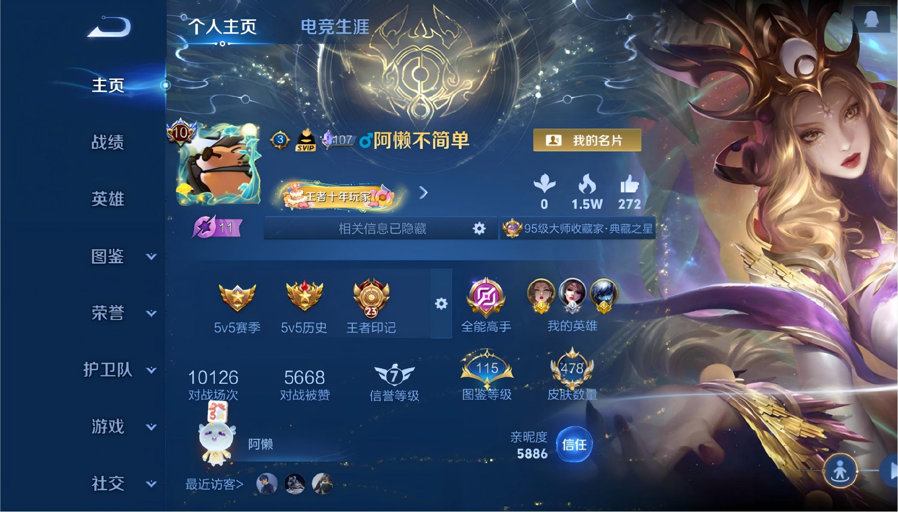
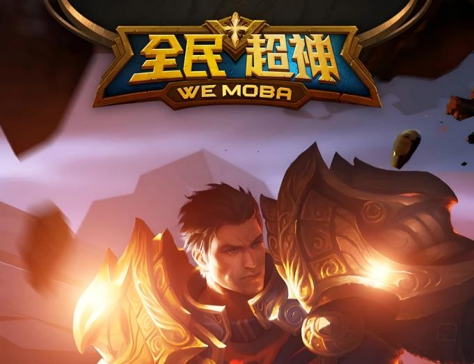
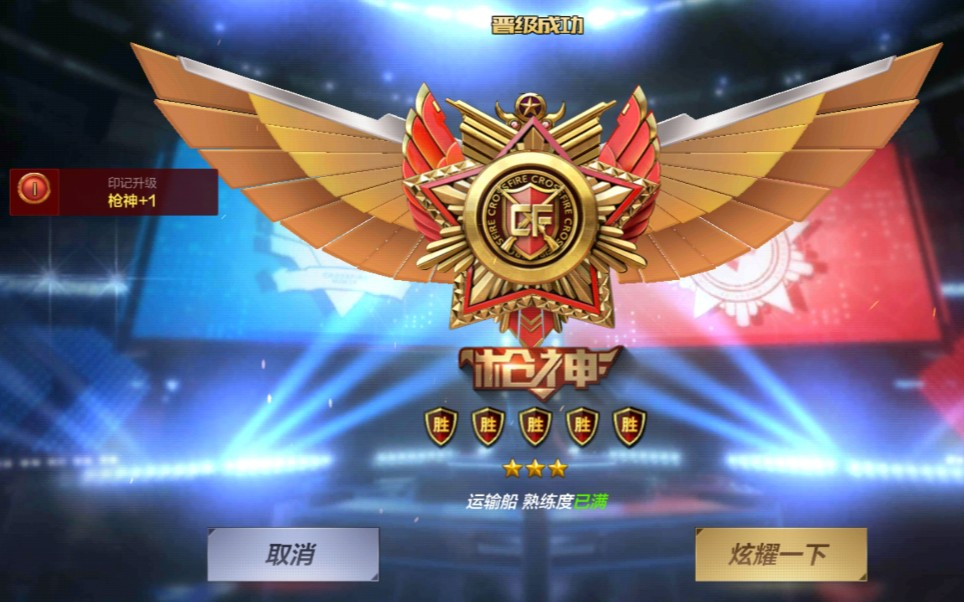
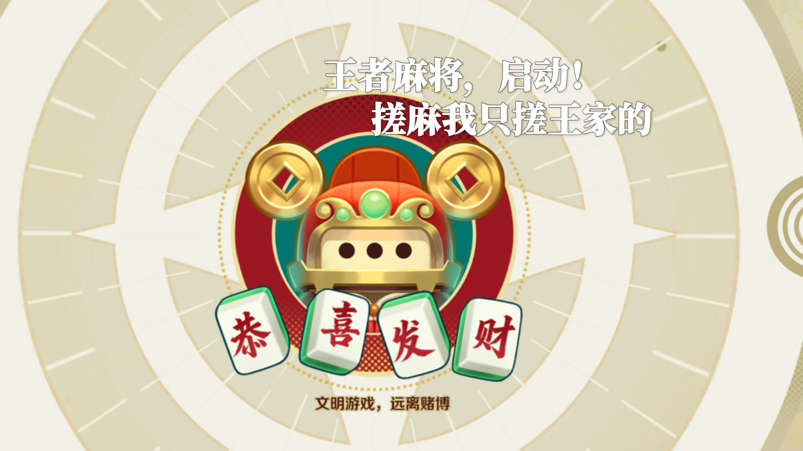
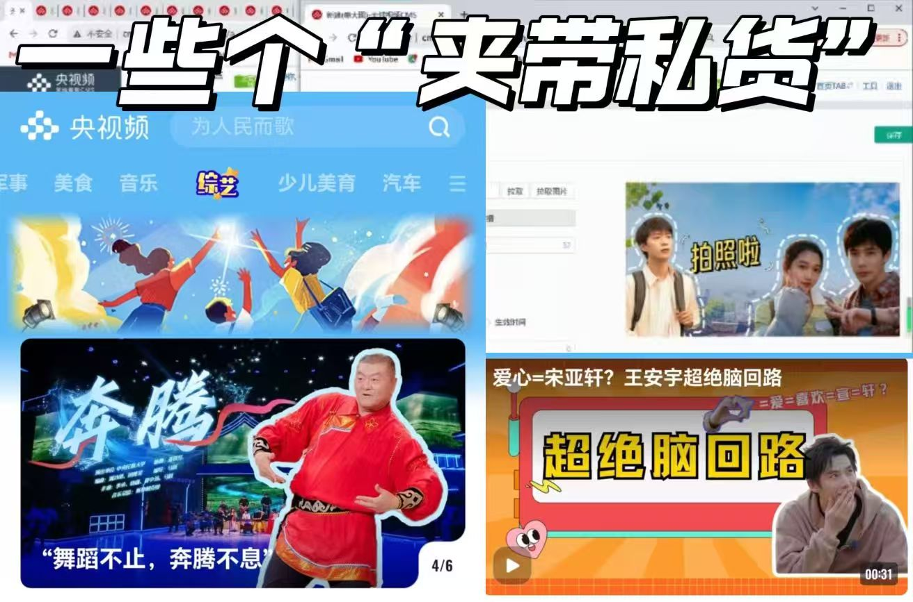

想要努力做到懂玩家、懂内容、懂商业化。

接触《全民超神》
尝试《决战平安京》
坚持《王者荣耀》

从CF端游到手游
从刺激战场到和平精英
从逆战到逆战·未来
天天酷跑中氪到弃游
元梦之星开服体验
QQ飞车炫舞端游到手游

腾讯欢乐麻将全集
欢乐斗地主
王者麻将·雀战不息
十余年游戏历程，集中在手游领域，更集中在腾讯游戏版图中。
涉猎市面主流游戏类型，从普通玩家到体验观察，有一定的取舍标准。
核心痛点(个人部分感受)：
活动亮点：
待优化点：
负责公司自创IP皮皮狐fox的创意内容策划，负责账号运营与线下展览，数据表现良好；参与集团大型文娱项目的策划与落地，作为市场部的一员深度统筹活动执行。

国家级媒体等单位的经历不仅充分锻炼了我踏实认真的工作态度，也让我逐渐完成学生思维的蜕变，而综艺相关内容的制作参与也激发了我对休闲娱乐内容的创造热情。
我虽然没有直接的游戏行业实践经验，但央视、搜狐、字节等丰富的实习让我具备了基本的优秀工作素质，
本科的传播学背景和硕士将攻读的体验经济领域知识也将让我进一步完备从玩家视角到商业任务的感知
即：既能以己度人理解玩家需求，也懂得内容质量与市场价值之间的最优平衡才是核心目标。